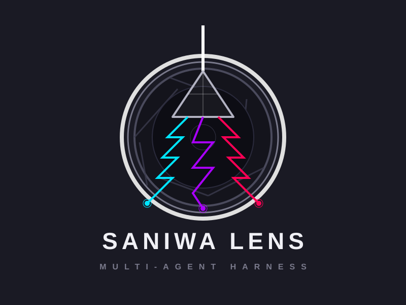

coding-agent の利用を見るレンズ

saniwalens は agent との対話履歴（transcript）と現在の設定を読み、
ローカルの SQLite データベース（ストア）に展開します。時間・トークン・手間がどこで無駄になり、
どう直すかを示す道具です。使われていない・重い設定、繰り返すツールの失敗、
行き詰まり箇所、どこにコストがかかっているかの全体像が分かります。
外部サーバには何も送りません。分析は読み取り専用で、変わった分だけ追加で取り込みます。詳しくは 設計 spec と ドキュメントページ をどうぞ。英語版は こちら。
名前の由来
saniwalens は「審神者（さにわ）」＋「レンズ」です。審神者は古代の神事で、
神の言葉（託宣）を受け取り、それが何を意味するのかを解釈・判定する役でした。
AI へのプロンプトを「呪文」、その出力を「託宣」と見立てれば、agent harness は
神域と人間界をつなぐ仲介役。この道具は、複数の agent の出す託宣――思考やコード生成の
過程――を見通し、解釈し、統合するためのレンズです。ブラックボックスを覗き込む
スコープ、それが SaniwaLens です。
インストール / ビルド
brew install armaniacs/saniwalens/saniwalenscargo install saniwalensnix run github:armaniacs/saniwalens -- doctor # 入れずに動かす
nix profile install github:armaniacs/saniwalens # `saniwalens` を PATH に入れるまず対話モードで触る
何から手を付けるか迷ったら、引数なしで saniwalens と打ちます
（saniwalens tui でも同じ）。聞かれる順に答えるだけで一通りの流れが回ります。
- 使う harness を聞かれます（
claude/opencode/kilocode。--harnessを付ければ聞かれません）。 - 見るものを聞かれます（
doctor/waste/failures）。 - 範囲を聞かれます（
global/project/project:<slug>）。 - 相当するコマンドを表示してから実行するので、後から同じものを再現できます。
- 実行後、その harness・範囲での
optimizeをその場で動かすか聞かれます。 - 最後に、使った harness を
config.tomlに残すか聞かれます。
流れが分かったら、直接コマンドを打ちます。
# 1. 一画面の健康診断（初回は自動で analyze）
saniwalens doctor
saniwalens doctor --scope global
saniwalens doctor --scope project:<slug>
# 2. 改善余地のランク付け
saniwalens waste
saniwalens inventory # 全 surface × 実際の利用
saniwalens failures # 繰り返す tool 失敗を分類別に
saniwalens stuck # 同じファイルを書き直し続けた箇所
# 3. 改善案を作って適用する
saniwalens optimize --scope global
読み取りコマンドは報告の前にストアを自動で更新します。変わっていない履歴は
飛ばすので速く、取り込み時刻の 1 行を stderr に出します。更新せずに今の
ストアのまま読むなら --frozen。PR 貼り付け用に
--format markdown、機械読み用に --format json もあります。
対応 harness
既定のまま動かす分には意識しなくて構いません。複数の agent 環境を
使い分けるときだけ読みます。1 回の実行で 1 つの harness を分析し、
--harness で選びます。harness は使う agent 環境のことで、
既定は claude のままなので、これまでの使い方はそのまま動きます。
harness ごとにストアを持つので、所見が混ざりません。
--harness |
Agent | Transcript | 設定カタログ |
|---|---|---|---|
claude（既定） |
Claude Code | ~/.claude/projects |
skills、rules、agents、MCP servers、CLAUDE.md |
opencode |
opencode | opencode データベース | commands、agents、AGENTS.md |
kilocode |
Kilo Code | エディタ globalStorage の task ファイル |
commands、agents、skills、AGENTS.md |